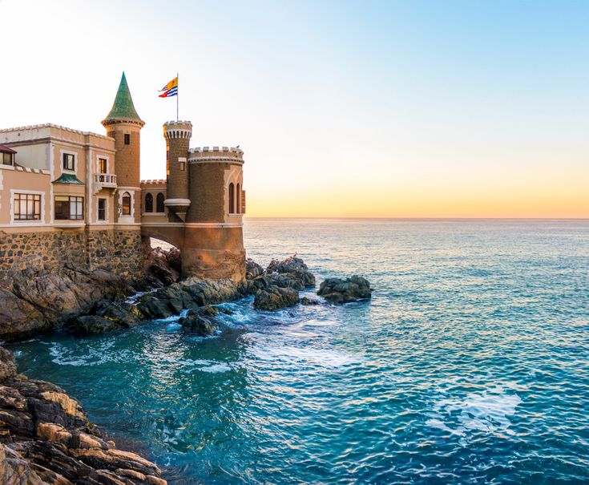
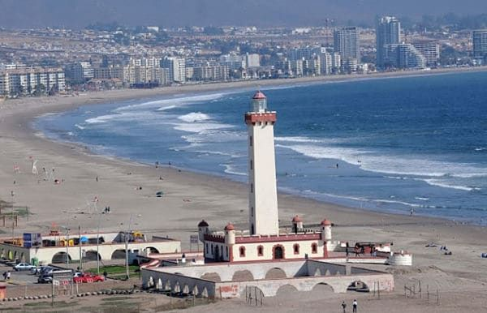

Viña del Mar
Known as Chile’s “Garden City,” Viña del Mar is the country’s most famous seaside resort, blending coastal charm with cultural sophistication. Its long sandy beaches, such as Playa Reñaca and Playa del Sol, attract sunseekers and surfers, while elegant gardens and historic palaces add to its appeal.
The city also hosts the renowned International Song Festival, offering a perfect mix of relaxation, entertainment, and cultural exploration along the Pacific coast.

La Serena
As Chile’s second-oldest city, La Serena blends colonial charm with coastal relaxation. Its golden beaches stretch for kilometers, perfect for sunbathing, while the historic center showcases elegant stone churches and neocolonial architecture.
Beyond the city, the Elqui Valley offers a gateway to world-class vineyards and some of the clearest skies in the world for stargazing and astrotourism.